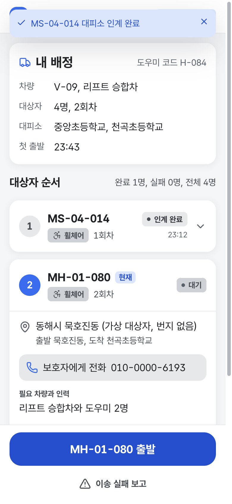

동해 청년 여러분께 부탁드립니다
동해 산불, 이웃을 돕는 5분
도우미 화면을 청년의 눈으로 먼저 써 보고
고칠 점을 알려 주세요.
미리는 산불 같은 재난 때 혼자 대피하기 어려운 이웃을 옮길 차와 도우미를 미리 정해 두는 서비스입니다. 재난이 나면 도우미 휴대폰에 배정이 도착하고, 도우미는 버튼 몇 번으로 이송을 진행합니다. 여러분이 그 도우미가 되어 보는 체험입니다.
1 miri-indol.vercel.app
miri-indol.vercel.app
/h/demo
QR로 접속
휴대폰 카메라로 찍으면 도우미 화면이 열립니다. 로그인은 없습니다.
miri-indol.vercel.app/h/demo
2
배정 받기
'시연 발령 시작'을 누르면 내 차량, 대상자 수, 대피소가 도착합니다. '수락'을 누르세요.
3
대상자 확인
첫 대상자의 이동 방법, 필요한 차와 인력, 주의사항을 읽어 보세요.
4
진행 보고
출발, 도착, 탑승 완료, 대피소 인계를 차례로 누르세요. 못 옮기면 '이송 실패 보고'를 씁니다.

써 보면 알게 되는 것
- 재난 때 도우미가 받는 정보누구를, 어떤 차로, 어느 대피소로 옮기는지 한 화면에 모입니다.
- 버튼 하나로 하는 보고현장에서 전화 없이 누른 기록이 담당자 화면에 바로 올라갑니다.
- 못 옮긴 이웃을 놓치지 않는 법부재나 진입 불가를 알리면 다음 대상자로 넘어가고 담당자가 다시 배정합니다.
5분 소요
로그인 없음
개인정보 받지 않음
헷갈린 버튼이나 고칠 점을 한 줄로 보내 주세요.
ekjjodia@naver.com